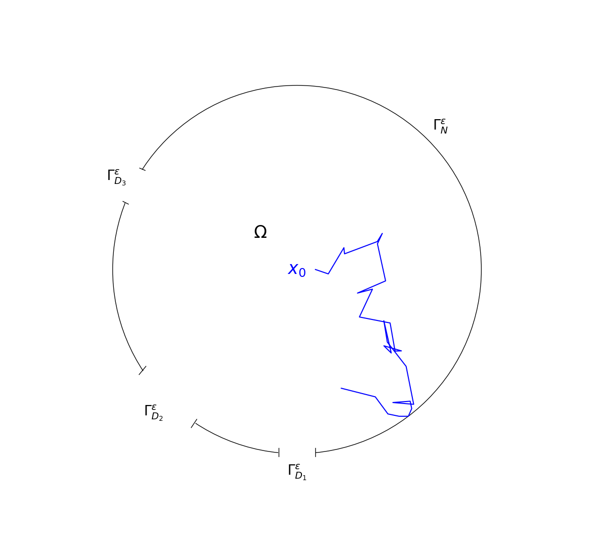

Python
Python C++
C++ Rust
Rust Julia
Julia


Louis Carillo
PhD student at CERMICS
Current Research
I am currently working on my PhD under the supervision of Tony Lelièvre, Urbain Vaes and Gabriel Stoltz on the topic: "Metastability in statistical physics: a mathematical and numerical analysis". The specific problem that interests me right now is the Narrow escape problem. In a few words, a Brownian motion is trapped in a bounded 2 or 3-dimensional domain with 1 (or many) small holes. The goal is to compute precisely the asymptotic of the exit time and distribution of the exit point in the limit where the holes decrease in size.
Publications
Eigenvector Dreaming
Marco Benedetti, Louis Carillo, Enzo Marinari, Marc Mèzard, J. Stat. Mech. (2024) arXiv:2308.13445
Freezing the Time Scale in a Simple Model of Random Walks
Louis Carillo, Marco Benedetti, Enzo Marinari, Marc Mézard, J. Phys. A (2024) arXiv:2308.13446